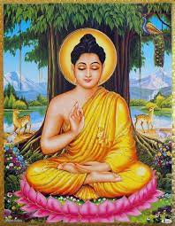

|  |
Siddhārtha Gautama and Buddha Shakyamuni
|
Siddhartha Gautama, most commonly referred to as the Buddha,was a wandering ascetic and religious teacher who lived in South Asia during the 6th or 5th century BCEsand founded Buddhism.
According to Buddhist tradition, he was born in Lumbini, in what is now Nepal,to royal parents of the Shakya clan, but renounced his home life to live as a wandering ascetic. After leading a life of begging, asceticism, and meditation, he attained enlightenment at Bodh Gaya in what is now India. The Buddha thereafter wandered through the lower Indo-Gangetic Plain, teaching and building a monastic order. He taught a Middle Way between sensual indulgence and severe asceticism, leading to Nirvana,that is, freedom from ignorance, craving, rebirth, and suffering.
| Sri Lanka | ☸️☸️☸️☸️☸️☸️ | Thailand | ☸️☸️☸️☸️ |
| Myannmar | ☸️☸️☸️☸️☸️ | Japan | ☸️☸️☸️ |